New Zealand’s COVID response ~ one GISer’s perspective
Geospatial Stuff
University of Auckland
The big picture
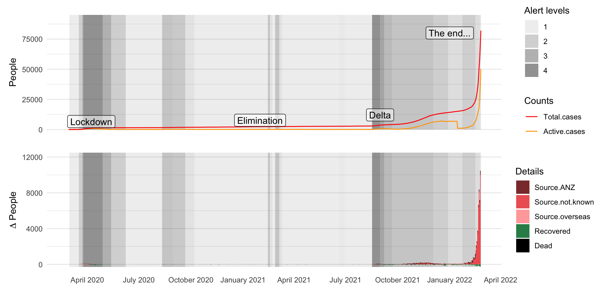
- Daily hand-entered data from government website
- (My) first serious exploration of the R
tidyverseand theggplotvisualization library - Confirmed a decision to transition ‘advanced GIS’ to ‘intro spatial data science’
- Biggest challenge was data buried in proprietary systems
Lockdown
“The team of five million”
Lockdown rush hour traffic SH16, Auckland
from commons.wikimedia.org
by Megan Harvey

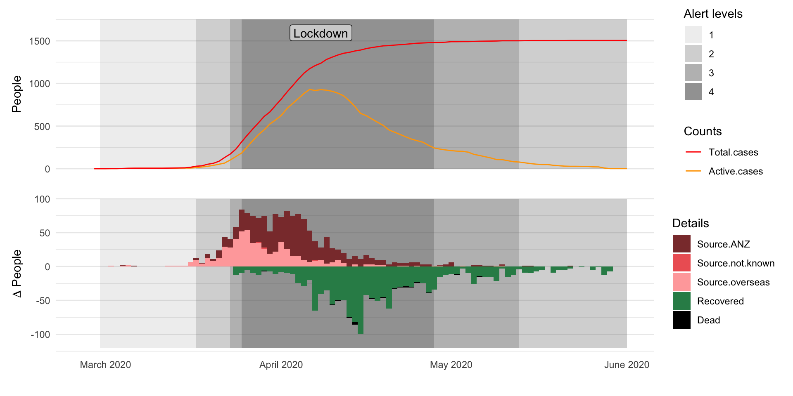
Modelling the pandemic
(From my basement)
Response informed by simple models
This one was well publicised:
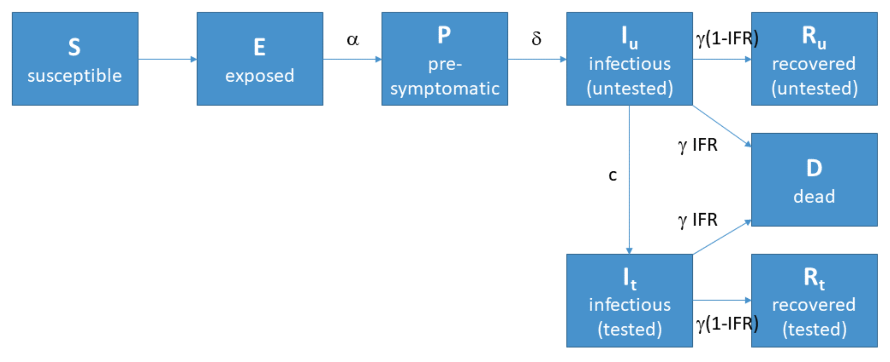
Epidemiology \(\neq\) geography
Implicitly it is
In practice, it is not
Populations understood as aggregate
Not distributed and variegated
Exploring bubbles
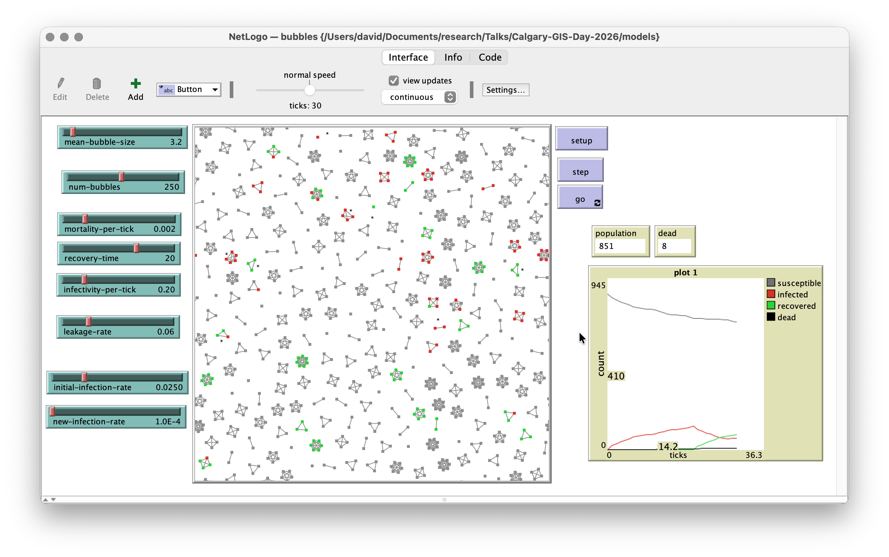
Bubbles nested in suburbs
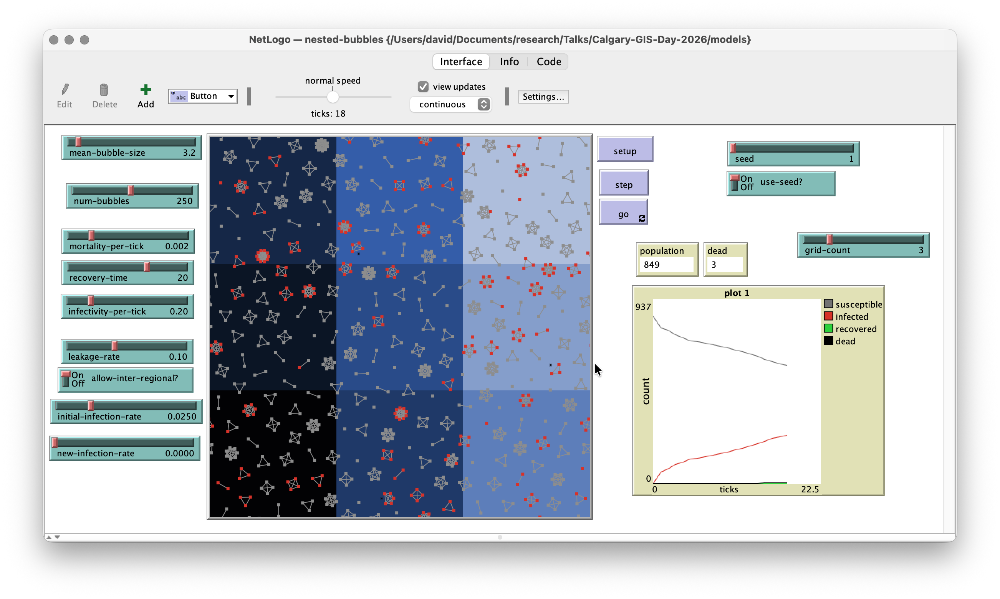
Regionalising SEIR
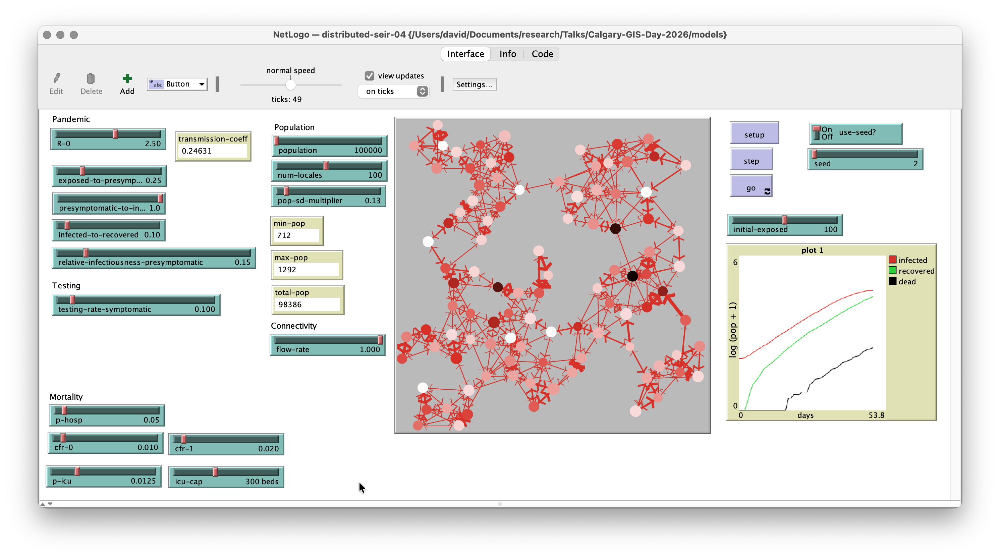
SEIR with local lockdowns
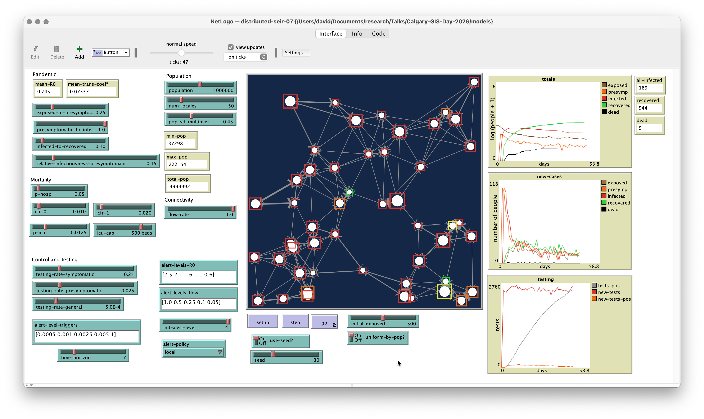
A spatialised branching process
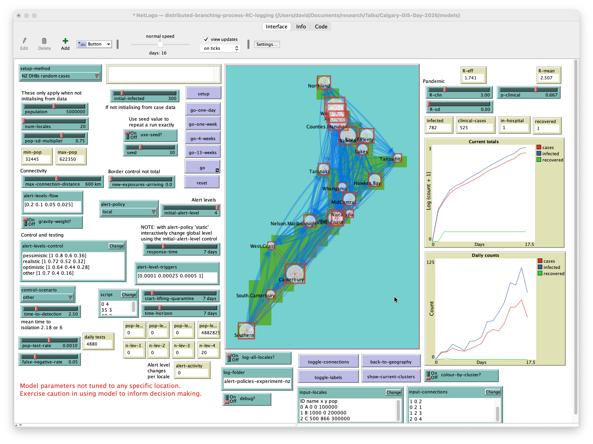
Branching process model
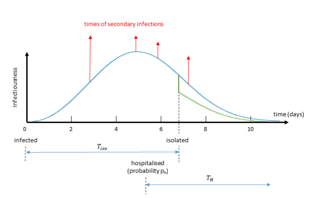
Plank MJ at al. 2020. A stochastic model for COVID-19 spread and the effects of Alert Level 4 in Aotearoa New Zealand. Preprint on medrxiv.org. doi: 10.1101/2020.04.08.20058743.
Each infection has a time-varying probability of causing future infections
New infections may not occur depending on local \(R_0\) at time they are scheduled
May occur non-locally in another connected locale
Alert level policy effects
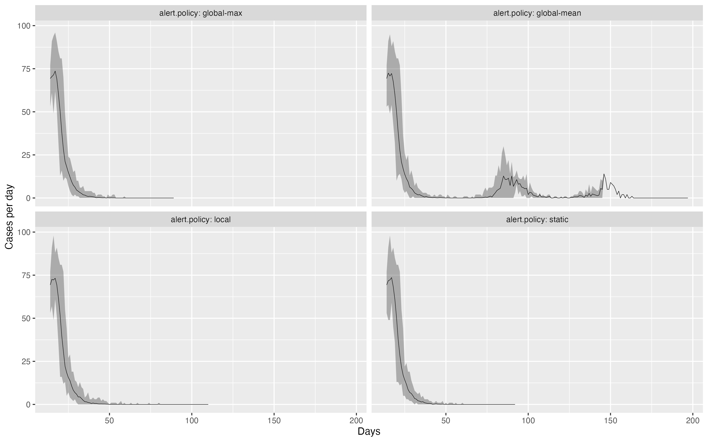
Alert level policy effects
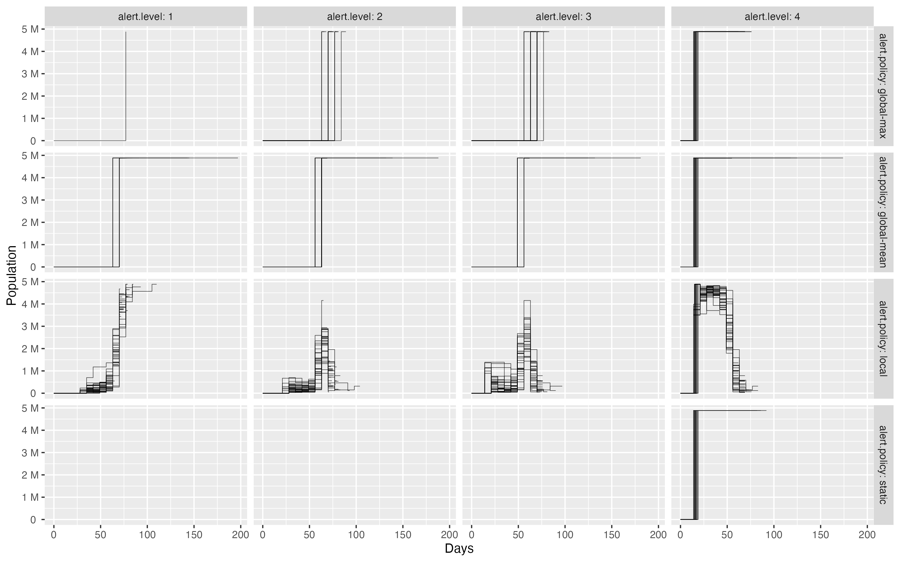
Clusters
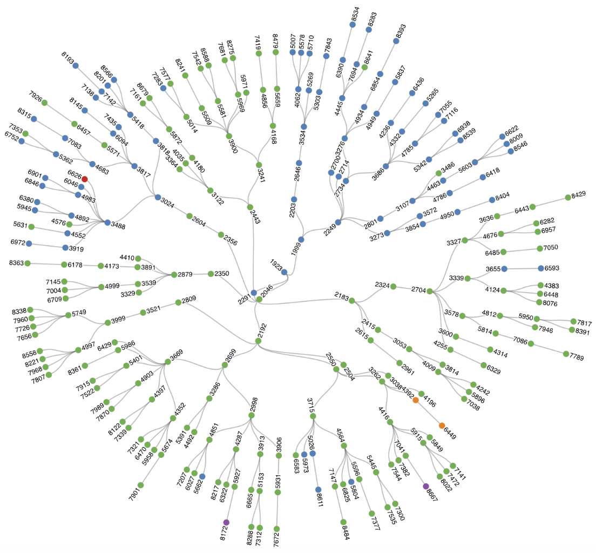
Elimination
On top of the world
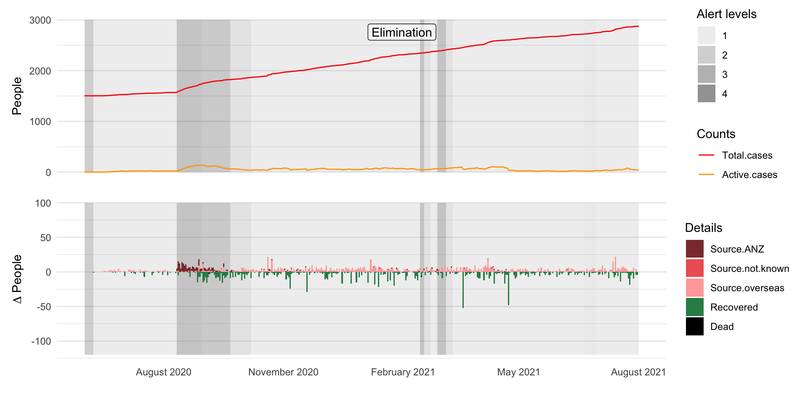
Enter Delta
Also: Omicron
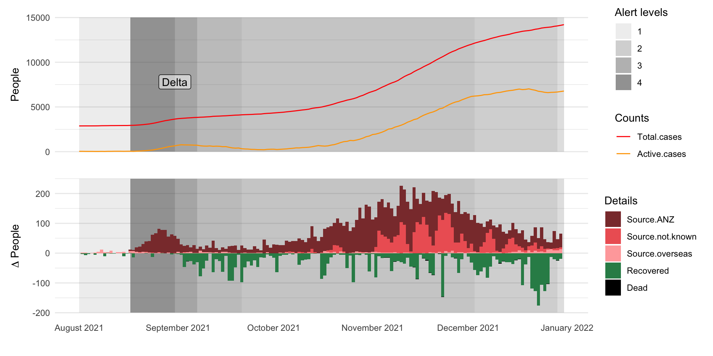
The end…
Reconnecting with the world…

Reflections
Spatial strategies can work in theory…
… but require strong social license
… and timely, accurate data
image source a3traveller.com
statue by Nathan Sawaya
Questions?
Geospatial Stuff
geospatialstuff.com
GIS Day 2026 - Health GIS - Calgary